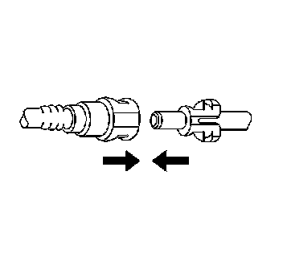

Plastic Collar Quick Connect Fitting Service
PLASTIC COLLAR QUICK CONNECT FITTING SERVICE
DISCONNECT PROCEDURE
CAUTION: Refer to Gasoline/Gasoline Vapors Caution.
1. IMPORTANT:
- There are several types of Plastic Collar Fuel and Evaporative Emission Quick Connect Fittings used on this vehicle.
- Bartholomew (1)
- Q Release (2)
- Squeeze to Release (3)
- Sliding Retainer (4)
- Push Down TI (5)
- The following instructions apply to all of these types of Plastic Collar Quick Connect Fittings except where indicated.
Relieve the fuel system pressure. Refer to Fuel Pressure Relief.
2. CAUTION: Refer to Safety Glasses Caution.
NOTE: Refer to Fuel and Evaporative Emission Hose/Pipe Connection Cleaning notice.
Using compressed air, blow any dirt or debris from around the connection.

3. This step applies to Bartholomew style connector ONLY. Squeeze the plastic quick connect fitting release tabs.
4. This step applies to Release Tab style connector ONLY. Release the fitting by pushing the tab toward the other side of the slot in the fitting.
5. This step applies to the Squeeze to Release style connector ONLY. Squeeze where indicated by the arrows shown above on both sides of the plastic ring surrounding the quick connect fitting.
6. This step applies to the Sliding Retainer style connector ONLY. Release the fitting by pressing on one side of the release tab causing it to push in slightly. If the tab doesn't move try pressing the tab in from the opposite side. The tab will only move in one direction.
7. This step applies to the Push Down TI style connector ONLY. Release the fitting by pressing on the tab indicated by the arrow.
8. CAUTION: Refer to Relieving Fuel Pressure Caution.

Pull the connection apart.
CONNECT PROCEDURE
1. CAUTION: Refer to Fuel Pipe Fitting Caution.
Apply a few drops of clean engine oil to the male connection end.

2. Push both sides of the quick-connect fitting together in order to cause the retaining feature to snap into place.
3. Once installed, pull on both sides of the connection in order to make sure the connection is secure.